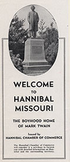
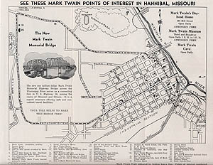

CLICK TO
ENLARGE
|
Early Tourist Map (1936)
Though less colorful than the BROCHURE FOR
INDUSTRIES that the Hannibal Chamber of Commerce
prepared at the same time, this CofC map indicates the
growing interest in the tourist "industry." A "Mark Twain
Trail" has been plotted around the city, and 44 points of
interest identified. Fourteen are specific MT attractions,
though many are simply "sites" -- i.e. there's no building
left to see at #12. "Muff Potter's Jail Site" or
#15. "Site of Huck Finn's Old Home," and the "Site
of Swimming Hole" (#32.) seems to be covered with
railroad tracks. But the "MT House" (#9.) and a "MT
Museum" (#30.) are there, open daily with free
admission. (The "Museum" is not the present one, which was
built in 1937 as a WPA project next to the "MT House," but
rather a temporary museum put into place for the 1935
Centennial in the lobby of a bankrupt bank.) Also marked
are three hotels and two campgrounds, and the camp sites
are explicitly linked to tourists.

CLICK TO
ENLARGE
|
){kind=link}
){kind=link}